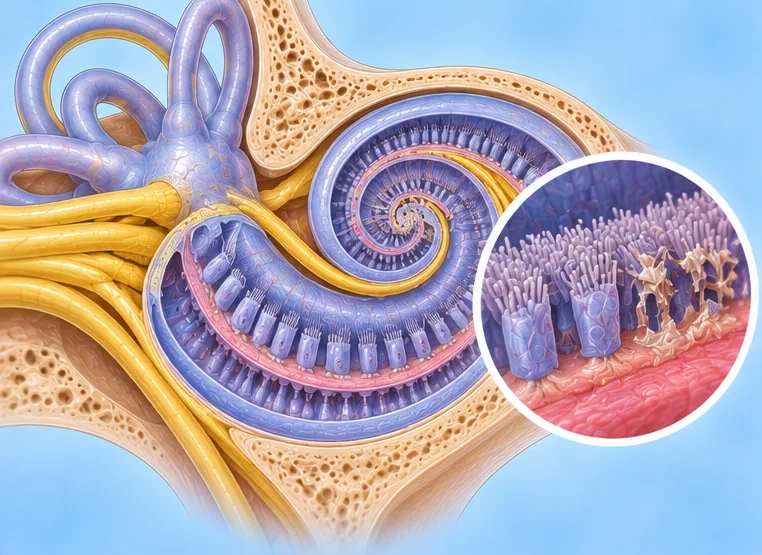
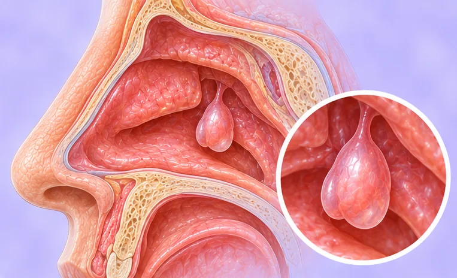

Ears, nose & throat
78 conditions and symptoms
 Acute epiglottitis
Acute epiglottitis- Acute laryngitis (voice box inflammation)
 Acute middle ear infection (otitis media)
Acute middle ear infection (otitis media)- Acute pharyngolaryngitis (throat and voice box)
 Acute sinus infection (sinusitis)
Acute sinus infection (sinusitis)- Acute sore throat (pharyngitis)
 Acute tonsillitis
Acute tonsillitis- Acute tonsillitis with pus
- Atrophic rhinitis
- Blocked Eustachian tube
- Boil in the ear canal
- Boil in the nose (nasal furuncle)
- Cerebrospinal fluid leak from the nose
- Cholesteatoma
- Cholesteatoma-type middle ear infection
- Chronic laryngitis (voice box inflammation)
- Chronic middle ear infection (otitis media)
- Chronic outer ear canal infection (otitis externa)
- Chronic rhinitis (blocked or runny nose)
- Chronic sore throat (pharyngitis)
- Chronic sore throat (simple pharyngitis)
- Chronic sphenoid sinusitis
- Chronic tonsillitis
- Deviated nasal septum
- Drug-induced rhinitis (rhinitis medicamentosa)
- Ear pit (preauricular sinus)
 Ear-crystal dizziness (BPPV)
Ear-crystal dizziness (BPPV)- Ear-related vertigo (spinning dizziness)
- Eardrum inflammation (myringitis)
- Earwax blockage (cerumen impaction)
- Empty nose syndrome
- Enlarged adenoids
- Enlarged adenoids
- Epiglottic cyst
- Ethmoid sinusitis
- Fluid in the middle ear (secretory otitis media)
- Follicular pharyngitis (throat inflammation)
- Frontal sinusitis (forehead sinuses)
- Glossopharyngeal neuralgia (throat nerve pain)

Hearing loss- Hypertrophic pharyngitis (thickened throat lining)
- Laryngeal papilloma (voice box)
- Laryngitis (voice box inflammation)
- Mastoiditis
- Maxillary sinus cyst
- Maxillary sinusitis
- Middle ear cholesteatoma
- Middle ear infection with pus (suppurative otitis media)
- Middle-ear infection
- Motion sickness
- Ménière's disease

Nasal polyps- Nasopharyngitis (inflamed nose and throat)
- Nerve deafness (sensorineural hearing loss)
- Nerve-related tinnitus (ringing in the ears)
- Outer ear canal cholesteatoma
- Outer ear infection (otitis externa)
- Perforated eardrum (burst eardrum)
- Pharyngeal papilloma (throat)
- Polyp in the voice box (laryngeal polyp)
- Post-nasal drip syndrome
- Retracted eardrum
- Rhinitis (blocked or runny nose)
- Ringing in the ears
- Sinusitis
- Sore throat (pharyngitis)
- Styloid process syndrome (Eagle syndrome)
- Sudden hearing loss
- Throat opening inflammation (faucial angina)
- Throat reflux (laryngopharyngeal reflux)
- Thyroglossal duct cyst
- Tonsil keratosis
- Tonsil stones (tonsilloliths)
- Tonsillitis
- Tonsillitis with pus (suppurative tonsillitis)
- Vasomotor rhinitis
- Vocal cord nodules
- Vocal cord polyp